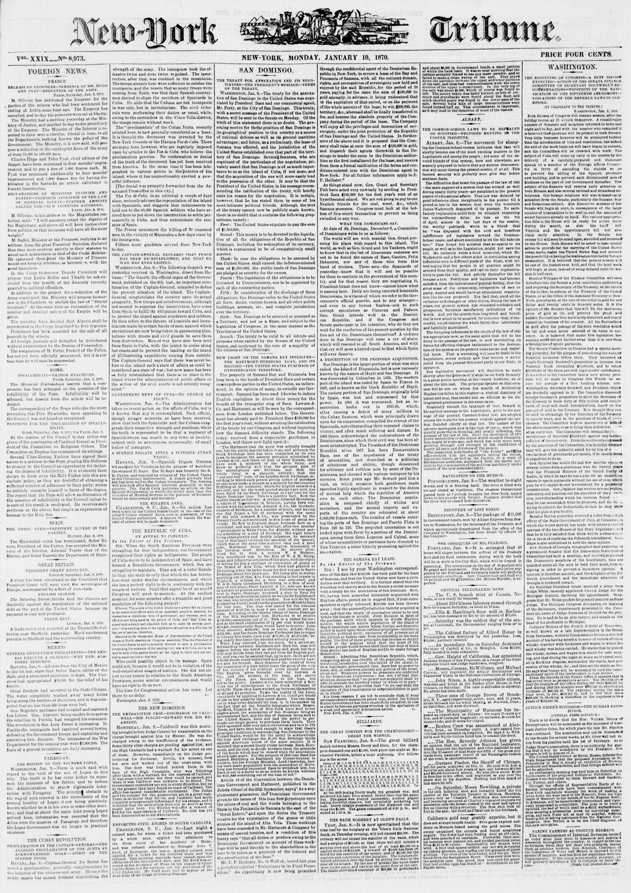

What the Dominicans Say.Lo que dicen los dominicanos.
New-York Tribune. New York [N.Y.], January 10, 1870. Page 1. Published by New York Tribune. A daily newspaper, 1866–1924.New-York Tribune. New York [N.Y.], 10 de enero de 1870. Página 1. Publicado por New York Tribune. Periódico diario, 1866–1924. View the originalVer el original

The New-York Tribune warned that using violence against San Domingo would provoke widespread alarm and hatred throughout South America. The article also described the island's history—including its discovery by Columbus, its division between Haiti and San Domingo, Spain's 1861 reannexation and subsequent 1863–1865 defeat, and Dominican independence—while noting that Buenaventura Baez has served as President since 1867 and is one of the negotiators of the annexation treaty.El New-York Tribune advirtió que el empleo de la fuerza contra Santo Domingo concitaría honda alarma y animadversión en toda la América del Sur. El artículo reseñó asimismo la trayectoria histórica de la isla —desde su descubrimiento por Colón y su división entre Haití y Santo Domingo, hasta la reanexión española de 1861, su posterior derrota entre 1863 y 1865 y la reconquista de la soberanía dominicana—, haciendo constar que Buenaventura Báez presidía la nación desde 1867 y figuraba como uno de los negociadores del tratado de anexión.
FULL TEXT:TEXTO COMPLETO:
WHAT THE DOMINICANS SAY.LO QUE DICEN LOS DOMINICANOS.
At date of St. Domingo, December 6, a Committee of Dominicans write to us as follows:Con fecha de Santo Domingo, 6 de diciembre, un Comité de Dominicanos nos escribe lo siguiente:
The world will see with scandal Gen. Grant pursuing his plans with regard to this island. The world, as well as Gen. Grant and his Yankees, ought to know that in the list of Dominican restorers are not to be found the names of Baez, Gautier, Felix Delmonte, nor any of those who form this band of traitors. These men—the Spaniards of yesterday—know that it will not be possible for them to continue in the government of this country, and for that reason they are negotiating it. President Grant does not know—cannot know what is passing here. Daily are being executed honorable Dominicans, in witness of which we refer to the Government’s official gazette, and to any stranger—and even to any honest Yankee—not to such corrupt speculators as Cazneau and Fabens. Gen. Grant intends well to the Dominican Republic, and if the Congress and Senate participate in his intention, why do they not wait for the resolution of the present question by the free act of the Dominicans themselves? A violence done to San Domingo will raise a cry of alarm which will resound in all South America, and with that cry will arise a hatred equal to that which Spain will ever deserve.El mundo verá con escándalo al general Grant persiguiendo sus planes con respecto a esta isla. El mundo, así como el general Grant y sus yanquis, debiera saber que en la lista de los restauradores dominicanos no se encuentran los nombres de Báez, Gautier, Félix Delmonte, ni ninguno de los que forman esta banda de traidores. Estos hombres—los españoles de ayer—saben que no les será posible continuar en el gobierno de este país, y por esa razón lo están negociando. El presidente Grant no sabe—no puede saber lo que pasa aquí. Diariamente están siendo ejecutados dominicanos honorables, en testimonio de lo cual nos referimos a la gaceta oficial del Gobierno, y a cualquier extranjero—y aun a cualquier yanqui honesto—no a especuladores tan corruptos como Cazneau y Fabens. El general Grant tiene buenas intenciones hacia la República Dominicana, y si el Congreso y el Senado participan de su intención, ¿por qué no esperan la resolución de la presente cuestión por el acto libre de los propios dominicanos? Una violencia hecha a Santo Domingo levantará un grito de alarma que resonará en toda América del Sur, y con ese grito se levantará un odio igual al que España merecerá siempre.
This collection gathers the coverage of the Dominican Republic in the American press, in the order it was published.Esta colección reúne la cobertura de la República Dominicana en la prensa estadounidense, en el orden en que se publicaron.